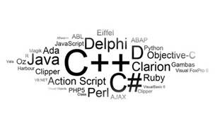

9 Cara membuat tidur anda berkualitas

5 Tips belajar cepat menjadi programmer

9 Cara membuat tidur anda berkualitas
Memperoleh tidur yang cukup sangatlah penting karena jika anda selalu mendapatkan jam tidur yang kurang, akan sangat mempengaruhi kondisi kesehatan anda. Penelitian menunjukkan bahwa kurang tidur dapat menyebabkan masalah pada berat badan anda, kemurungan (tidak bersemangat), masalah pada jantung dan bahkan membuat tubuh anda rentan terkena penyakit. Kebanyakan orang mengetahui bahwa tidur sangatlah penting, namun demikian mereka justru semakin hari semakin mendapatkan jam tidurnya berkurang karena alasan kerjaan yang menumpuk, kebiasaan tidur larut, main game, dsb.
Semasa mahasiswa saya memiliki pola tidur yang sangat buruk : mengobrol hingga larut dengan teman-teman organisasi, main game dan keluyuran. Jam 2 pagi adalah jam paling cepat saya tidur waktu itu. Bangun di siang hari dengan kondisi badan yang lemas dan tidak bersemangat. Betul-betul seperti vampire, malas keluar rumah di siang hari.
Kebiasaan buruk saya tersebut akhirnya membawa dampak yang terasa sampai dengan saat ini : saya mengalami gangguan dengan maag. Biasanya orang yang memiliki pola tidur yang buruk, ia memiliki pola makan yang buruk juga, dan itulah yang saya alami.
Yah itu intermezzo sedikit tentang kebiasaan jelek saya dahulu. Bagi para pembaca yang memiliki pola hidup seperti saya dahulu, saya sarankan untuk segera merubahnya. Mungkin saat ini anda belum terasa karena anda masih muda, namun seiring bertambahnya umur anda, biasanya anda akan mulai merasakan gejala-gejala akibat pola tidur dan pola makan yang buruk. Oke kembali ke topik utama kita kali ini, yaitu 10 tips yang akan membantu anda mendapatkan tidur yang berkualitas :
1. Berolahraga
Para ahli kesehatan, siapapun dan dimanapun, pasti menganjurkan kita untuk berolahraga rutin. Mungkin anda pun sudah bosan mendengarkan nasihat ini berkali-kali. Tak ada salahnya saya mengingatkan sekali lagi kali ini. :) Banyak sekali manfaat berolahraga, salah satunya membantu anda agar cepat tidur di malam hari dan anda memperoleh tidur yang berkualitas (nyenyak).
2. Jadwalkan waktu tidur anda
Menjadwalkan tidur anda secara teratur juga merupakan hal yang penting dalam mendapatkan tidur berkualitas. Hindari hari ini anda tidur pukul 9 malam, keesokan hari pukul 12 malam dan keesokan harinya lagi pukul 10 malam. Keteraturan akan membantu metabolisme dalam tubuh anda berjalan baik.
3. Kenali kebiasaan anda
Menyambung poin 2 diatas, begitu anda mengetahui jam tidur anda setiap malam, pastikan anda mempersiapkan segala sesuatu yang biasa anda lakukan sebelum tidur dengan baik agar jam tidur anda tidak terlewat. Sebagai contoh : anda berencana untuk tidur setiap malam pukul 11 dan anda mempunyai kebiasaan membaca kurang lebih setengah jam sebelum tidur. Artinya pukul 10.30 maksimal anda harus sudah mulai membaca sehingga pukul 11 malam anda sudah tertidur.
4. Jangan mengkonsumsi makanan yang berat sebelum tidur
Pastikan anda tidak makan berat atau terlalu banyak sebelum tidur. Makan malam yang ringan sangatlah disarankan. Saat ini sering saya mendengar orang-orang melakukan diet di malam hari. Banyak rekan-rekan saya mulai melakukan hal ini : mereka makan sedikit nasi atau bahkan tidak makan nasi sama sekali, hanya lauk pauk dan sayur-sayuran saja. Hal ini baik sekali. Perut yang sangat penuh dapat membuat anda kesulitan untuk tidur. Jika anda masih merasa lapar, disarankan mengemil buah-buahan saja dibanding ’junk food’.
Saya pernah mendengar nasihat dari orang yang sangat sukses dan bijak, diusianya yang sudah berkepala 6 namun tetap energik seperti usia 40 tahun : ”cukup tidur, banyak minum dan makan jangan terlalu kenyang.” Ya, nasihat yang sangat sederhana namun dapat membuat orang berumur panjang.
5. Matikan komputer anda
Jika anda adalah penggila komputer entah itu untuk browsing ataupun bermain game, disarankan anda membuat jeda antara anda berhenti bermain komputer dengan saat sebelum anda naik ke atas ranjang anda, minimal ½ jam. Biasanya kita akan mengalami kesulitan untuk tidur jika kita langsung berbaring sehabis menggunakan komputer. Relax-kan otak anda sejenak, karena otak anda masih ‘panas’ saat itu.
Memang kadang-kadang sulit untuk melakukan hal ini, seperti yang saya alami, karena kita sedang asik-asiknya dan pasti merasa sayang sekali jika kita menyia-nyiakan waktu setengah jam tersebut tidak berada di depan komputer. Namun saya juga merasakan jika otak saya telah dingin, saya menjadi lebih cepat untuk tertidur.
6. Jangan mengobrol di telepon sebelum tidur
Ini mirip dengan poin no 5. Ketika anda mengobrol dengan teman anda di telepon, otak anda saat itu berada pada ‘mode siaga’. Perlu waktu untuk merubahnya menjadi ‘mode tenang’. Luangkan waktu kira-kira setengah jam untuk mendinginkan otak anda sebelum anda pergi tidur. Otak yang tenang tentu saja membuat kita lebih cepat untuk tertidur.
7. Pastikan lampu kamar anda padam
Sangat disarankan jika kita tidur dalam keadaan kamar yang gelap. Hampir sebagian besar ahli menyarankan untuk mematikan lampu saat kita beristirahat karena akan mempengaruhi kualitas tidur kita. Saya pernah membaca sebuah artikel yang mengatakan bahwa efek cahaya akan merangsang hormon tertentu dan akhirnya mempengaruhi metabolisme di dalam tubuh kita. Biasanya jika ruangan tempat kita beristirahat dalam keadaan gelap, tidur kita akan nyenyak dan jarang sekali terjaga.
8. Kasur
Apakah kasur anda sudah terlalu tua untuk anda gunakan? Apakah pada bagian tengahnya sudah lebih kempis dibandingkan sisi-sisinya? Jika demikian, saya sarankan anda untuk menggantinya dengan yang baru, yang akan menopang tubuh anda lebih baik sehingga anda merasa jauh lebih nyaman selama tidur. Hal ini biasanya terjadi pada kasur yang berisikan kapuk. Model ‘spring bed’ jarang sekali terjadi.
9. Lingkungan tidur anda
Jika anda seringkali terbangun hanya untuk mematikan AC atau kipas angin karena kedinginan, hal tersebut jelas sangat mempengaruhi kualitas tidur anda. Aturlah timer pada AC / kipas angin tersebut atau jika tidak terdapat timer, pastikan anda menyelimuti diri anda sebelum tidur sehingga anda tidak terbangun di tengah malam untuk mematikan AC atau kipas angin.
Jadi para pembaca yang budiman, mulai hari ini anda bisa melakukan tips-tips diatas agar tidur anda lebih berkualitas, sehingga pada keesokan hari anda dapat memulai hari anda dengan lebih segar dan ceria.
5 Tips belajar cepat menjadi programmer
Terkadang ketika seseorang ingin belajar bahasa pemrograman pasti pernah bingung: mulai dari mana, kemana materi yang harus dipelajari, dsb. Ketika saya belajar untuk menjadi seorang programmer, saya pelajari bahasa pemrograman C#. Berminggu-minggu, berbulan-bulan saya masih belum paham betul karena baca-baca buku yang terkadang beda dengan pemahaman kita. Akhirnya selama kurang lebih 3 bulan, saya paham mengenai OOP. Kali ini saya mau share bagi para pemula bagaimana sih supaya cepat memahami suatu bahasa program. Berikut ini adalah 5 tips yang bisa kalian pakai supaya cepat menjadi programmer (jangan dulu handal, kalem saja). :D
1. Cari Sample Project, Code yang Sederhana
Yang pertama adalah mencari sampel (contoh) project atau kode yang sederhana. Banyak situs web yang menyediakan berbagai project gratis, salah satu web yang saya sarankan yaitu di CodeProject.com. Disana tersedia berbagai contoh project dan kode-kode sesuai dengan bahasa yang kalian pelajari. Kalian harus pastikan melihat, mencoba dan memahami setiap kode yang ada. Coba pahami apa fungsi dari kode-kode yang ada itu. Dari sanalah awal-mula kita membuka pemikiran terhadap bahasa pemrograman.
2. Jangan hanya membaca dan menjalankan contoh program saja
Kadang, ketika kita sudah mendapatkan sebuah contoh project/kode, kita sering beranggapan “saya tau ini, pasti bakal begini-begitu”. Jangan salah, kemungkinan itu hanya kemauan kita untuk memanfaatkan contoh project itu tanpa memahami setiap baris kodenya. Oleh sebab itu, coba ketik ulang dan pahami setiap baris dan prioritaskan bagian yang diperlukan saja.
Mungkin memerlukan waktu yang cukup lama untuk memahami suatu contoh project. Tak jarang, pemula harus dihadapkan dengan permasalahan yang cukup sederhana dalam suatu contoh project. Salah satu contoh kasus adalah kamu mendapatkan pesan error “Missing Reference …… bla..bla..bla”. Disinilah kamu diberikan cobaan yang cukup membingungkan untuk memecahkan masalah tersebut. Cari-cari di internet sampai ketemu, sampai akhirnya permasalahan itupun terpecahkan dan pemahaman pun akan semakin meluas.
3. Luangkan waktu untuk belajar menulis kode buatan sendiri
Yang ketiga, luangkanlah waktu untuk menulis kode buatan sendiri. Setelah memahami sesuatu tentang bahasa pemrograman atau bahkan jika kamu masih kebingungan ide apa yang harus dituangkan, balik lagi ke nomor dua. Lihat, Baca dan Pahami. Dibagian ini kamu akan dihadapkan dengan beberapa tantangan, tentu akan mengasah dan memperluas pemahaman kita terhadap bahasa pemrograman.
4. Lihat Kesalahan-kesalahan yang diberikan oleh Debugger
Biasanya di sebuah IDE terdapat sebuah panel “Error List” yang menampilkan beberapa kesalahan-kesalahan pada project yang sedang dibuat. Disana kamu akan tau, masalah-masalah apa saja yang harus diselesaikan. Itu tantangan yang diberikan oleh sistem. Untuk memecahkan masalah-masalah tersebut bisa mencari referensi dari internet, coba cari dengan keyword sesuai dengan pesan kesalahannya.
5. Cari Sumber-sumber yang membahas permasalahan kode
Apabila ada masalah yang tidak dapat dipecahkan atau tidak dipahami, kunjungi saja forum WinPoin. Saya yakin forum ini akan banyak yang membantu. Kalau mau yang lebih kompleks coba masuk ke forum CodeProject.com. Itulah 5 tips cara cepat untuk mempelajari bahasa pemrograman. Semoga tips ini membantu bagi para pemula yang ingin belajar bahasa pemrograman.
4 Cara agar hidup lebih tenang dan senang
Senantiasa dirundung cemas, stres , atau tertekan? Coba ikuti langkah-langkah berikut ini! hidup anda akan terasa lebih indah, tenang, dan menyenangkan.
Dalam hidup ini, terdapat banyak hal yang dapat membuat kita terasa tertekan, panik, atau stres, misalnya karena tugas sekolah menumpuk, teman tak bersahabat, konflik dengan keluarga, dll. “Hidup ini bagaikan berlian. Adapun warnanya, tergantung dari mana orang melihatnya,” begitu kata-kata orang bijak. Ucapan itu memang benar. Dalam hidup ini banyak cara yang dapat kita lakukan untuk mengubah kecemasan menjadi ketenangan dan kedamain. Berikut ini kiatannya.
1. Perbaiki Presepsi tentang Diri Sendiri
Sebaiknya, anda berhati-hati dalam menilai diri sendiri. Mengapa? Karena diri kita terbentuk dari apa yang kita pikirkan. Ibarat sebuah kebun, pikiran yang baik akan menghasilkan buah yang baik. Sebaliknya, pikiran buruk akan menghasilkan buah yang buruk pula. Ulas kembali pikiran anda, pusatkan pikiran pada harapan dan keberhasilan, bukan pada keputusan dan kekalahan. Tak jarang perubahan dalam cara berfikir dan memandang suatu masalah dapat menjadi jalan menuju ketentraman jiwa.
2. Membantu Orang yang Mmbutuhkan
Beberapa penelitian menunjukkkan bahwa mereka yang meluangkan waktunya untuk membantu orang lain ternyata lebih bahagia dan tenang jiwanya. Bahkan, sebuah penelitian yang dilakukan di Michigan, Amerika Serikat membuktikan bahwa mereka yang aktif dalam kegiatan amal atau organisasi di luar rumah lebih panjang umur dan sehat dari pada yang lebih senang berdiam diri. Menurut para ahli, hal itu disebabkan karena tubuh mereka yang senang menolong itu memproduksi helper’s high, yaitu sejenis senyawa kimia otak yang berfungsi meningkatkan mood.
3. Berjalan Kaki
Salah satu cara tercepat untuk mengubah perasaan stres menjadi tenang adalah dengan berjalan kaki. Sebuah penelitian yang yang dilakukan di California State University, Amerika Serikat, membuktikan bahwa jalan kaki selama 10 menit dapat membangkitkan mood lebih cepat dan tahan lama daripada makan permen. Memang, rasa manis dari permen dapat menimbulkan semangat, tetapi biasanya seperempat jam kemudian anda akan merasa lebih lelah. Sebaliknya, dengan berjalan kaki semangat dan energi yang muncul dapat bertahan lebih lama. Oleh karena itu, jika suatu saat pikiran sedang mumet atau semangat telah menurun, segeralah langkahkan kaki anda. Kemudian, berjalan selama 10 menit.
4. Mendengarkan Musik
Di abat 18, seorang penulis terkenal asal Jerman, Jean Paul Friedrich Richter, pernah menyebutkan: “dalam kehidupan manusia, musik itu bagaikan bulan purnama di kegelapan malam,” tulisanya. Ternyata, kini para ahli telah membuktikan kebenaranya. Musik memang mampu menenangkan saraf yang menegang. Bahkan, menurut beberapa ahli penyakit jantung di Amerika Serikat, mendengarkan musik selama seperempat jam dapat menghasilkan pengaruh yang sama denga pemakaian 10 mg obat penenang valium. Penelitian lain menunjukkan bahwa musik juga dapat menurunkan tekanan darah, metabolisme dasar, serta tingkat respirasi, sehingga mengurangi respon spikologis terhadap stres. Oleh karena itu, jika ingin menciptakan perasaan damai dan tenang, carilah salah satu musik yang paling disukai. Nyalakan dan dengarkan musik itu di hari-hari yang penuh dengan stres. Anda akan merasakan lebih santai dan tenang.
Send me a message, or contact me from the addres below
Christian WijayaEnter your name and email
©:Copyright @ 2016